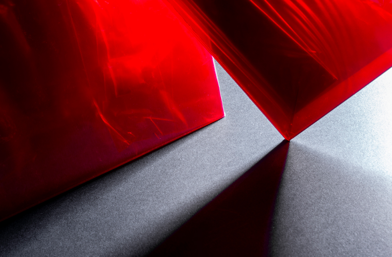

auxocromo
El proyecto Auxocromo es una exploración de color, composición, y armonía visual. Las imágenes se enfocan en des contextualizar objetos y colores para crear un enfoque plenamente estético, en el que se sienten diferentes sensaciones dependiendo de el uso de color. Se trató de resaltar las cualidades físicas de los objetos fotografiados, su transparencia, reflejos, y la saturación del color utilizando juegos de color, enfoques, encuadres, y posiciones de luz. El resultado de las fotografías son diferentes sensaciones en las cuales el espectador está libre a interpretar en cuanto a su criterio.
